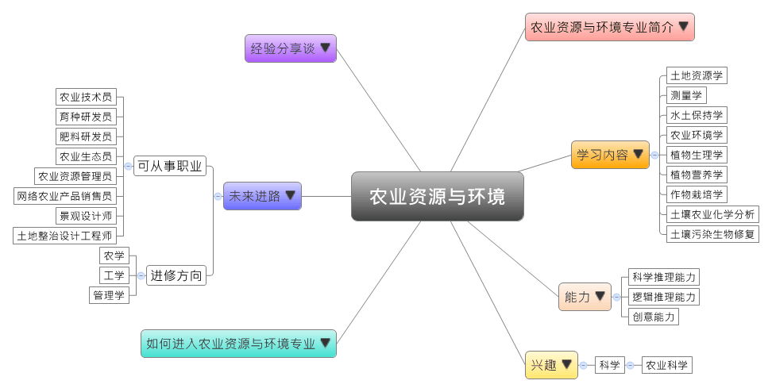
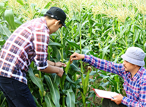

- 专业大观园
-

- 专业介绍
-
什么是农业资源与环境？
农业资源与环境是指满足农业生产的各种要素，其中包含农业自然资源（如土地资源、水资源、气候资源和生物资源）和农业经济资源（如农业人口、劳动力、农业技术装备、农业基础设施），是农业生产与发展的重要物质基础。在职场上，中国作为粮食生产大国，无论是从事第一线的生产工作或是进行农业相关的科研工作，都需要具备此专业的专业知识；在生活中，农业不只是研究生产粮食的学科，也是提升生活质量的利器。通过绿色农业与休闲农业的推广，将农牧生产与经营观光化，观光工厂提供民众参观、动手采摘、比赛或品尝等的体验活动都是这类型产业最好的发展典范。
农业资源与环境专业培养具备农业资源与环境的知识与实务技能，让学生在农业、农资、土地（壤）、水源、气候、环保、生态等单位从事各种农业资源运用与管理、生态环境保护，以及资源遥感与信息技术开发等工作。
在生物实验室观察植物组织  户外教学－农产品质量检测
- 学习内容
-
农业资源与环境专业学生主要学习农业资源与环境科学的理论与知识，包含农业生态、农业环境保护、农产品检测与质量管理等。由于此专业注重调查、监测、规划等操作能力的训练，所以学生亦须接受农业资源调查与规划、环境监测与评价、生态效益分析，以及气象观测等的专业训练，让学生在农业资源与环境领域具备高效且持续的信息化能力。
本专业学习方向通常分为三类：农业资源利用类、环境科学工程类和生物学类；基础课程着重在对地质、气象、生物植物的观察培养与测量，核心课程则主要以土壤学为根基，延伸出植物营养、农化分析等课程。农业资源与环境专业主干课程有：土壤学、植物营养学、土壤农业化学分析、土地资源学、测量学、水土保持学、农业环境学、植物生理学、作物栽培学、景观规划、食用菌生产、土壤污染生物修复……等；实践环节有资源调查评价、土壤地质等实习，以及方案编制与监测实践课程。
本专业可以习得的知识与获得之能力、技能列点：第一，熟习农业资源的管理、土壤改善、环境保护与生态建设等基础知识；第二，了解农业资源调查、环境评估、科学施肥与灌溉、农产品质量检测、再生资源利用、土地规划等专门技术；第三，掌握国家农业资源管理与环境生态保护的有关政策，及当前产业的现况与发展。
- 能力
-
农业资源与环境专业学生，需具备以下能力：
相关性向能力 说明 科学推理能力  能够进行作物栽培与生产食用菌
能够进行作物栽培与生产食用菌
具备提升土壤肥力与植物营养的能力
具备土壤化学分析、植物与微生物培养的能力逻辑推理能力 能够进行农业资源调查与规划
了解环境与农业发展的依存关系
能够综合分析环境资源与生态效益创意能力 具备生态园区建设与规划的能力
能够进行景观环境的保护与设计
- 兴趣
-
若你对下列活动或事物有高度兴趣，可考虑进入农业资源与环境专业学习：
科学 农业科学 喜欢探究农业与自然生态
对环境问题倾向以科学方式得出解答
喜欢亲自大自然，对于接触农田、牧场、土壤等各种下乡活动感兴趣
- 如何进入此专业
-
下面列举开设农业资源与环境专业的211工程重点大学院校：
- 未来进路
-
可从事职业
农业资源与环境专业学生毕业后通常适合于传统农林渔牧、环保或农业资源等企业就业，可从事资源利用与管理、环境保护、生态规划等工作，有些人甚至可从事遥感、信息技术的研发工作。常见从事的工作有农业技术支持或营销，若具备计算机专业背景，亦可结合农业与互联网、电商领域，进行产业结合的联系工作。在工作职场上皆能发挥资源调查、环境评价等专长：
行业 职业 农、林、渔、牧 农业技术员、育种研发员、农业资源利用员 新能源、环保科技 农业环境保护员、生态员、肥料研发员、土地整治设计工程师、景观设计师 电子商务、互联网 电商运营员、网络农业产品销售员 进修方向以下列举农业资源与环境专业毕业生可以继续修读之学科门类、一级学科与硕士点：
学科门类 一级学科 硕士点 农学 农业资源利用土壤学、植物营养学、土地利用与信息技术、农业气象学、土地资源学 作物学作物栽培学与耕作学、农业地质、农业科技服务与管理、作物资源学 植物保护农业昆虫与害虫防治、植物检疫与生态健康、生物安全与检疫、农产品安全、农药学 农业推广（专业硕士）农村与区域发展、农业信息化、农业机械化、农业科技组织与服务、设施农业 工学 农业工程农业机械化工程、农业电气化与自动化、农业水土工程、农业生物环境与能源工程、农业信息化技术及应用、节水灌溉工程 工程（专业硕士）农业工程 管理学 农林经济管理农业经济管理、农业信息分析学、农村发展 注：农业推广硕士报考资格 农业推广硕士报考资格
农业推广硕士报考资格1.农业推广和农村发展方面从事相关技术、管理或培训工作的在职人员
2.依据学历条件不同，需具备农业推广实践经验年限不同：
（1）学士学位获得者，需具有3年以上实践经验
（2）具有大学本科毕业学历，需具有4年以上实践经验
（3）具有大学专科毕业学历，具有中级以上技术职称，6年以上实践经验
注：工程硕士报考资格
工程硕士报考资格1.大学本科毕业后，有3年以上工作经验
2.获得国家承认的高职高专毕业学历后，有5年以上工作经验
3.已获硕士学位或博士学位，有2年以上工作经验
- 经验分享谈
-
著名农学、土壤学专家——石元春
18岁的石元春，在1949年考进清华大学农学院，从此与农业结下一辈子的缘分。毕业后他跟随土壤地理学家李连捷院士加入中科院赴新疆科考队，在野外考察了整整四年。数十年来总是奔往农村第一线的经历，使石元春与农民间有着深厚的情感。
而石元春主要从事土壤改良，特别是盐碱地改良，所以他往往去的都是最穷困的地区，在河北邯郸，他看到秋收秋种时节，连母亲给孩子做棉衣的时间都没有，一家人连同母亲、父亲、孩子全都冻在那儿，这让石元春终身难忘，左思右想该如何解决中国的“三农”问题：农民、农业、农村。
在外从事多年科研后，石元春因缘际会成为了农大的校长，他有个性，较狂妄，重科研轻教学，又主观固执，因此饱受争议。但石元春的个性就是要干一件事就要干到好，他认为一个人的成就很大因素在于他的EQ，也就是跟情商有关系，毫无性格的人，他可能既不会失败也不会成功，至少不会大成功。
20世纪90年代后，石元春开始参与多次国家的计划与研究，并在1991年时他当选中科院院士，94年当选中国工程院院士，95年则当选第三世界科学院院士，期间担负中国农业科技战略发展的重任，成为中国农业发展的战略科学家。 【资料来源：新浪博客. 著名农学专家土壤学专家--石元春[EB/OL].】